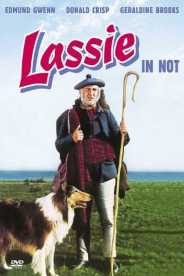

IMDB-Wertung: 6.4 / 10
IMDB-Wertung: 6.4 / 10  Metascore:
Metascore: 
Lassies geliebtes Herrchen wird von Bettlern umgebracht. Ohne Besitzer wird Lassie zum Opfer der Gesetzgebung...
Alternativ: Challenge to Lassie (Englischer Titel)
 IMDB-Wertung: 6.4 / 10 Metascore:
Lassies geliebtes Herrchen wird von Bettlern umgebracht. Ohne Besitzer wird Lassie zum Opfer der Gesetzgebung...
Jahr: 1949
Dauer: 72 Minuten
FSK:
Land: USA Studio: MGMTonspuren: DD2.0 - ,
Untertitel:
Auflösung: 1080p (1408x1080) Größe: 3921 MB
Regisseur: Richard Thorpe
Drehbuch: William Ludwig, Eleanor Atkinson
Soundtrack: André Previn
Darsteller:
 Edmund Gwenn als John Traill
Edmund Gwenn als John Traill Donald Crisp als 'Jock' Gray
Donald Crisp als 'Jock' Gray Alan Napier als Lord Provost
Alan Napier als Lord Provost Arthur Shields als Dr. Lee
Arthur Shields als Dr. Lee Lumsden Hare als MacFarland
Lumsden Hare als MacFarland Kathryn Beaumont als Tenement Child (uncredited)
Kathryn Beaumont als Tenement Child (uncredited) Chet Brandenburg als Townsman (uncredited)
Chet Brandenburg als Townsman (uncredited) Tex Cooper als Townsman (uncredited)
Tex Cooper als Townsman (uncredited) Harry Cording als Adam, the Blacksmith (uncredited)
Harry Cording als Adam, the Blacksmith (uncredited) Herbert Evans als Magistrate (uncredited)
Herbert Evans als Magistrate (uncredited) James Finlayson als Newspaper Reporter (uncredited)
James Finlayson als Newspaper Reporter (uncredited) Kenner G. Kemp als Scottish Soldier (uncredited)
Kenner G. Kemp als Scottish Soldier (uncredited) Colin Kenny als Bailiff (uncredited)
Colin Kenny als Bailiff (uncredited) Doris Lloyd als Landlady (uncredited)
Doris Lloyd als Landlady (uncredited) Tudor Owen als Doctor (uncredited)
Tudor Owen als Doctor (uncredited) Paul Collins als Tenement Child (uncredited)
Paul Collins als Tenement Child (uncredited)Datei: X:\2-Dilogie(G-M)\Lassie in Not (1949, FSK, 1408x1080).mkv seit 24.04.2019
Festplatte: HD Collection-2(A-Z)-3(A-M)
 Alle Filme aus Gruppe '2-Dilogie(G-M)'
Alle Filme aus Gruppe '2-Dilogie(G-M)'